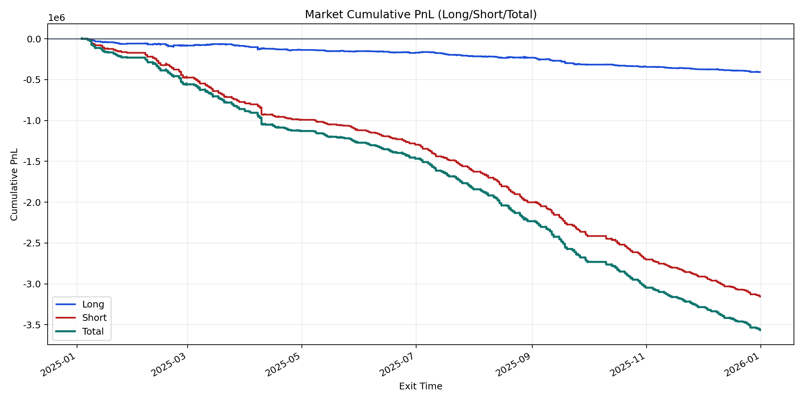
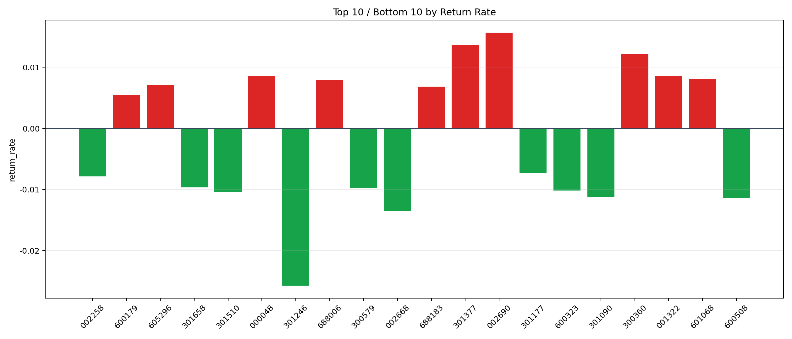

| repo_root | /home/haoranyou/data/output/dynamic_AUM_TAKER_index1000 |
|---|---|
| period_months | 12 |
| period_label | 2025-01-03_to_2025-12-31 |
| start_time | 2025-01-03 09:50:27 |
| end_time | 2025-12-31 14:44:47 |
| n_trades | 164631 |
| n_symbols | 709 |
| total_pnl | -3563623.2560000205 |
| long_total_pnl | -408751.0027499861 |
| short_total_pnl | -3154872.253250034 |
| total_entry_notional | 2934240681.0 |
| long_entry_notional | 836250913.0000001 |
| short_entry_notional | 2097989768.0 |
| total_return_rate | -0.0012144958929495601 |
| long_return_rate | -0.0004887899031208424 |
| short_return_rate | -0.0015037595994843928 |
| top_symbols_by_return | ["002690", "301377", "300360", "001322", "000048", "601068", "688006", "605296", "688183", "600179"] |
| bottom_symbols_by_return | ["301246", "002668", "600508", "301090", "301510", "600323", "300579", "301658", "002258", "301177"] |

